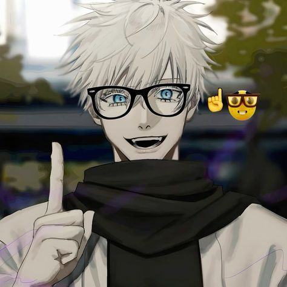
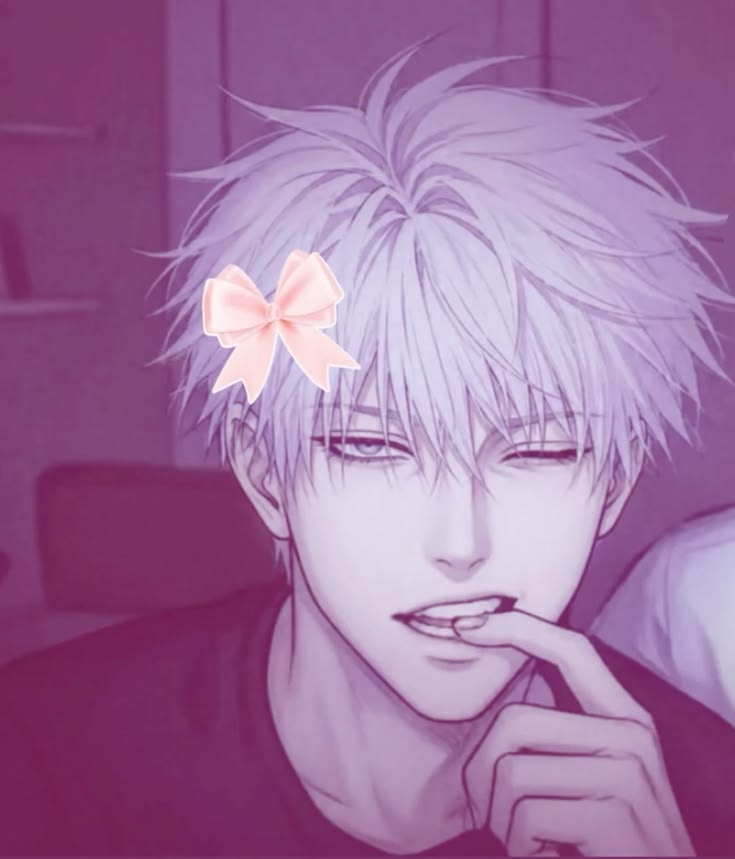

GOJO SATORU
MARI MENGENAL SIAPA ITU GOJO SATORU
MARI BERJELAJAH
Website ini dibuat sebagai media informasi untuk mengenal lebih dekat sosok Gojo Satoru, salah satu karakter paling populer dalam serial Jujutsu Kaisen.
Gojo Satoru adalah salah satu karakter utama dalam serial anime dan manga Jujutsu Kaisen karya Gege Akutami. Ia dikenal sebagai penyihir jujutsu terkuat yang memiliki kemampuan luar biasa bernama Limitless dan Six Eyes, dua kekuatan langka yang membuatnya sangat sulit dikalahkan. Gojo berperan sebagai guru di Tokyo Jujutsu High, tempat ia membimbing para calon penyihir jujutsu untuk menghadapi berbagai ancaman kutukan. Selain memiliki kekuatan yang luar biasa, Gojo juga dikenal karena penampilannya yang khas dengan rambut putih, mata biru yang menawan, serta penutup mata yang menjadi ciri khasnya. Di balik sifatnya yang santai, humoris, dan sering bercanda, Gojo memiliki rasa tanggung jawab yang besar terhadap murid-muridnya serta tekad kuat untuk menciptakan dunia jujutsu yang lebih baik. Berkat kekuatan, karisma, dan perannya yang penting dalam cerita, Gojo Satoru menjadi salah satu karakter anime paling populer dan dicintai oleh penggemar di seluruh dunia.

Geto Suguru adalah sahabat sekaligus teman sekelas Gojo Satoru saat mereka belajar di Tokyo Jujutsu High. Ia merupakan salah satu penyihir jujutsu paling berbakat pada masanya dan dikenal memiliki kemampuan Cursed Spirit Manipulation, yaitu teknik yang memungkinkannya mengendalikan roh-roh kutukan yang telah ditaklukkan. Bersama Gojo, Geto dikenal sebagai duo penyihir terkuat yang sering menjalankan misi-misi penting.
Meskipun awalnya memiliki tujuan yang sama untuk melindungi manusia, pengalaman dan pandangannya terhadap dunia membuat Geto berubah. Ia mulai mempertanyakan pengorbanan para penyihir jujutsu demi manusia biasa dan akhirnya memilih jalan yang berbeda dari Gojo. Perubahan tersebut menjadikan Geto salah satu tokoh penting yang memengaruhi jalannya cerita Jujutsu Kaisen serta perkembangan karakter Gojo Satoru.
Gambar diperoleh dari Pinterest
MEMBASMI · MELINDUNGI · MELATIH
Mengalahkan roh kutukan yang mengancam keselamatan manusia.
Menjaga masyarakat dari bahaya supranatural yang tidak terlihat.
Membimbing calon penyihir jujutsu untuk masa depan yang lebih baik.
Perjalanan Gojo Satoru sebagai penyihir terkuat, mulai dari masa sekolah bersama Suguru Geto hingga perannya sebagai guru di Tokyo Jujutsu High.
"Di dunia yang penuh kutukan, tetaplah menjadi cahaya seperti Gojo Satoru." Terima kasih telah berkunjung. — Istri Gojo Tercinta ♡